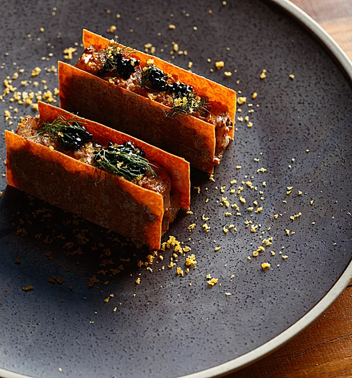

A Taste of Turkey to Grace the Wharf at Barangaroo
Merry Christmas

Renowned chef and cookbook author Somer Sivrioglu’s
acclaimed Balmain restaurant Efendy is famous for
providing Sydneysiders with the authentic taste of Turkey.
In February 2016, Somer brought his own culinary flair to
the city’s newest development, Barangaroo.
Sivrioglu is joined by acclaimed Evecutive Chef Arman
Uz in creating Anason's seasonal, modern Turkish menus
and providing Sydney with its own waterfront meyhane.

All our food menus are designed to share with a strong
focus on vegetarian and seafood dishes. Our ever-
changing menus are young, fresh and vibrant
showcasing the best of contemporary Turkish cuisine.
When creating our modern dishes we use traditional
Turkish cooking methods such as pickling, drying,
yogurt, salcha and tarhana making whenever possible
and try to keep the use of modern technologies to
a minimum.
We believe in using fresh, quality and seasonal Sydney
ingredients, and work with a range of premium, boutique
suppliers.

Invoking the concept of the traditional restaurants
and bars of Istanbul, the meyhanes, Anason offers the
Anatolian cooking Somer is celebrated for, in a new,
modern waterside environment.True to its Turkish roots,
the drinks menu of Sydney's most popular meyhane is as important as
the food. Sample traditional Turkish Raki, sip
your way through the wine regions of Turkey, or celebrate
life with signature cocktails.
The venue's design reflects the modern side of Istanbul
with the typical Bosphorus Blue being prominent all
around the restaurant. In typical meyhane style,
Anason is open for drinks accompanied by mezes or for
a full feast. Be our guest and let us take you on a journey to
the Bosphorus to sample some of Turkey's famous
hospitality!
Anason was the first permanent restaurant to open on
Barangaroo’s Wulugul Walk. Discover this harbourside
destination and many of the streets within, each with its
own character: from the high-energy high street that is
Barangaroo Avenue to Sydney’s iconic waterfront. There’s
a story with every step.
Follow us on
Find Us
5/23 Barangaroo Ave
Barangaroo NSW 2000
Contact Us
Phone: (02) 9188 1581
Can't Get Enough?
Visit our sister-venue
Efendy in the
heart of Balmain!
Business Hours
Open every day | 12pm till late